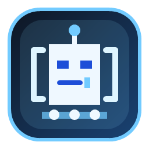
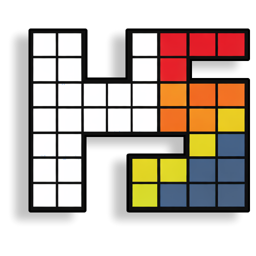
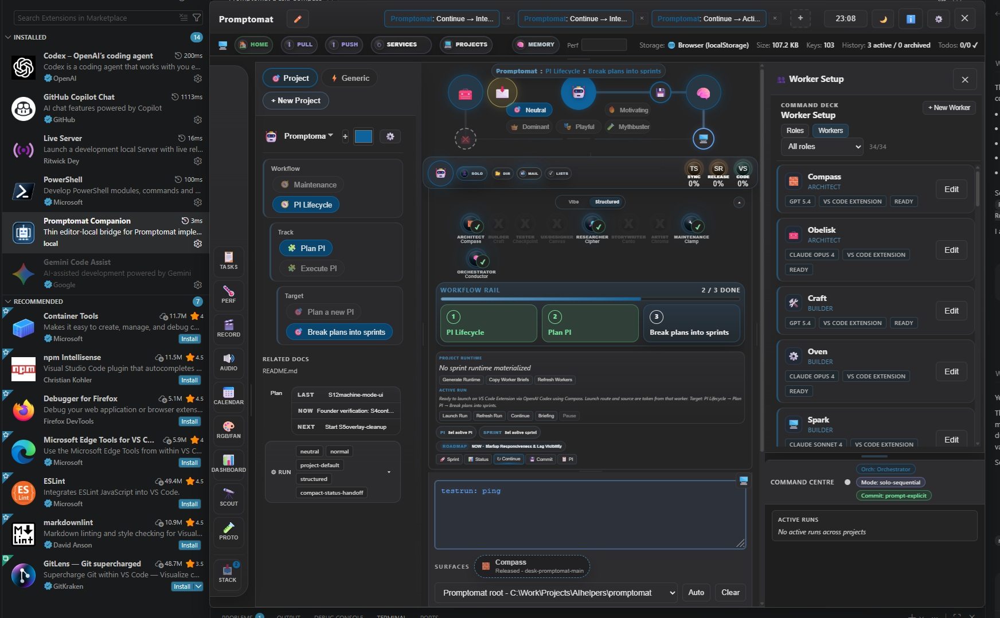
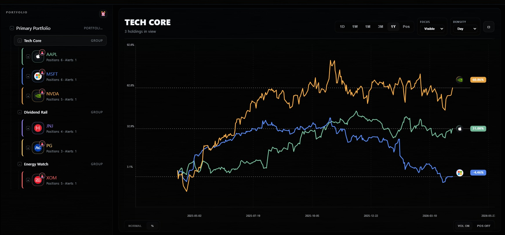
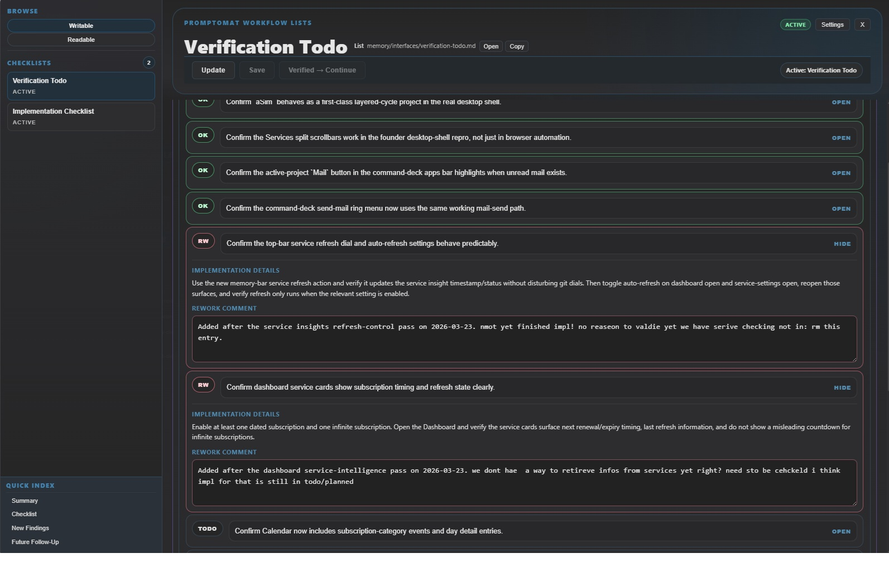

The Founder Loop Is Real: Promptomat, Heatstack, and Visible Progress
Today felt different because the work stopped looking like isolated wins and started reading like one connected system.
Promptomat can now turn real repo progress into a founder story, open the writing lane, hand that work into VS Code through the companion, and carry honest state back into the app. At the same time, Heatstack pushed through a much bigger visual breakthrough, and FlyingGame kept its own momentum visible instead of disappearing behind tooling work.


The central takeaway is simple: the plan held, bounded side lanes ran in parallel, and the main lane never had to stop shipping.
The New Founder Loop
We have talked before about planning, implementation, and AI support. What changed now is that these pieces finally connect into one visible loop:
- Promptomat reads project momentum instead of relying only on memory.
- The dashboard shows what changed since the last public update.
- The founder can turn that snapshot directly into a blog-writing run.
- The VS Code companion mirrors the active task instead of acting like a disconnected helper.
- The run comes back with honest readback, so the app reflects what actually happened.
That is important because it changes the feeling of the work. It is no longer just "we built some features." It is "we can show the work, pick it up, and keep moving without rebuilding context every time."

This ended up being the right lead image because it proves the real loop in one shot: extension installed, companion visible, run context visible, and Promptomat clearly in charge of the workflow.
Heatstack Became a Better Story Surface
The Heatstack breakthrough matters for two reasons. First, the UI itself got much stronger. Second, it gave us a better visual language for the founder demo.
The selected-group overview and heat-view direction feel like real product surfaces now: dark shell, strong central chart, readable side structure, and a compact summary-to-detail relationship that makes the screen easy to scan.

That same structure is exactly what made the Promptomat hero direction click for us. We do not want a busy desktop collage. We want a selected run, a readable rail, and one dominant center surface that proves what the system is doing.
Promptomat Is Finally Showing the Work, Not Just Managing It
Promptomat took a big step here too. The dashboard can now show "since last post" progress across real projects, compact cards can expand into richer detail, and the founder story can jump directly into Evergreen Blog without a manual copy-paste ritual.
That matters because the dashboard, checklist, and companion no longer feel like separate utilities. They feel like one operating loop:
- the dashboard shows what changed,
- the checklist validates the demo path,
- the companion picks up the run where execution actually happens.

FlyingGame Still Belongs in This Story
One trap in tooling-heavy weeks is that the product work disappears from the narrative. We do not want that. FlyingGame stays in the founder story because it proves we are not just polishing our own process in isolation.
The current plan is to use the existing FlyingGame teaser as the third proof artifact for now, then follow it with a bigger dedicated FlyingGame post once the next milestone is ready. That keeps game progress visible without pretending the older clip is the full current story.
That matters because the teaser is not being used as a random extra. It closes the loop. Promptomat shows the workflow. Heatstack shows the visual breakthrough. FlyingGame proves the actual product lane still shipped while the system around it improved.
Why This Feels Like a Breakthrough
The breakthrough is not that any one panel exists. It is that the system now supports a better founder rhythm:
- plan clearly,
- delegate simple bounded work,
- keep the main lane moving,
- integrate the results,
- show the progress honestly.
That is what we want to keep pushing. Less stop-start context rebuild. More visible momentum. More products that can explain themselves because the work trail is already structured.
This post is the first time we can show that loop with real surfaces: Promptomat in front, Heatstack as a proof-heavy companion story, and FlyingGame still visible as the product lane that keeps us honest.